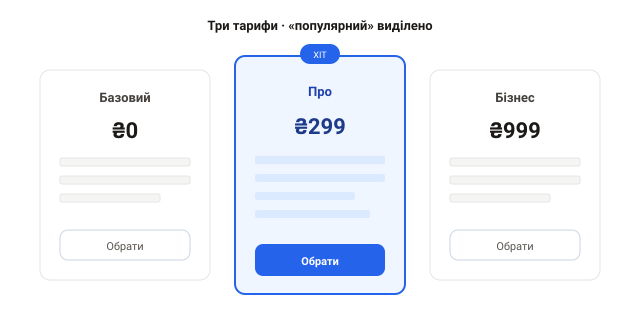

Практика: Bootstrap
Створи HTML-файл, підключи Bootstrap через CDN і розв'яжи завдання. Перевіряй у браузері, звужуючи вікно, — усе має лишатися адаптивним.
Завдання 1. Сітка карток
Зроби ряд із трьох карток: на десктопі — 3 в ряд, на планшеті — 2, на телефоні — 1. Кожна картка з зображенням, заголовком, текстом і кнопкою.
Рішення
<div class="container my-4">
<div class="row g-3">
<div class="col-12 col-md-6 col-lg-4">
<div class="card h-100">
<img src="https://picsum.photos/400/200?1" class="card-img-top" alt="">
<div class="card-body">
<h5 class="card-title">Картка 1</h5>
<p class="card-text">Опис товару.</p>
<a href="#" class="btn btn-primary">Купити</a>
</div>
</div>
</div>
<!-- ще дві колонки -->
</div>
</div>Завдання 2. Адаптивний navbar
Зроби навігаційну панель із логотипом і кількома посиланнями, яка згортається в «бургер» на малих екранах.
Підказка
Використай navbar-expand-lg, navbar-toggler і data-bs-toggle="collapse".
Рішення
<nav class="navbar navbar-expand-lg bg-light">
<div class="container">
<a class="navbar-brand" href="#">Бренд</a>
<button class="navbar-toggler" data-bs-toggle="collapse" data-bs-target="#nav">
<span class="navbar-toggler-icon"></span>
</button>
<div class="collapse navbar-collapse" id="nav">
<div class="navbar-nav">
<a class="nav-link active" href="#">Головна</a>
<a class="nav-link" href="#">Послуги</a>
<a class="nav-link" href="#">Контакти</a>
</div>
</div>
</div>
</nav>Завдання 3. Форма входу в модалці
Кнопка відкриває модальне вікно з формою входу (email, пароль, кнопка). Використай компонент Modal і класи форм.
Завдання 4. Сторінка-прайс (виклик)
Збери секцію з трьома тарифами компонентами Bootstrap: у
кожній картці — назва тарифу, ціна, список можливостей і кнопка «Обрати». Середній
(«популярний») тариф виділи кольоровою рамкою й бейджем-міткою. Зроби секцію
повністю адаптивною через сітку (row/col): три колонки на десктопі,
одна під одною на телефоні. Орієнтуйся на макет.

Спробуй переверстати свій проєкт-лендинг із розділу «Проєкти» на Bootstrap — відчуєш, наскільки швидше й де фреймворк допомагає, а де заважає.